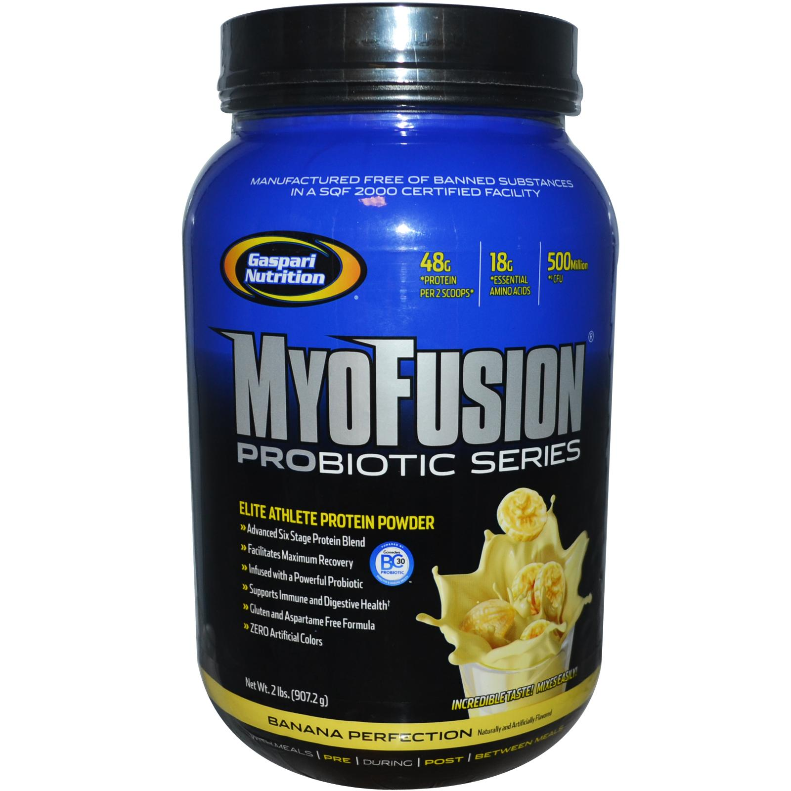

Información de Myofusion :
Myofusion tiene un increíble sabor, se mezcla fácilmente,
tiene avanzada mezcla de proteína de seis etapas, patentado Ganeden FC30 (Bacillus
coagulans GBI-30, 6086) probiótico para apoyar la salud inmune y digestivo.
Características de suero concentrado de proteína, concentrado de proteína de arroz integral,
proteína de suero, caseína de leche aislado de proteína, albúmina de huevo, y de acción rápida
de proteína de suero hidrolizado.
Más de 9 gramos de aminoácidos esenciales (AAE) para apoyar la recuperación.
Gluten y Aspartame fórmula libre.
MyoFusion Probiotic Series es una fórmula revolucionaria proteína con una mezcla muy potente de
seis fuentes de aminoácidos de la proteína envasados. Gaspari Nutrition sólo utiliza las mejores
fuentes absolutas de proteínas por lo que cada porción contiene 24 g de proteína de la construcción
de músculo. Para mejorar aún más la fórmula revolucionaria es la durabilidad y la patente protegida
Ganeden FC30 (Bacillus coagulans GBI-30, 6086) probiótico para ayudar a mantener la salud digestiva e
inmune.
Este probiótico avanzado es lo suficientemente fuerte como para sobrevivir a la fabricación,
no requiere refrigeración, es sta¬ble estantería, y sobrevive a los ácidos del estómago para entregar
las bacterias beneficiosas para el sistema digestivo al mismo tiempo que tiene la investigación clínica
real para respaldar esas afirmaciones. Verdaderos atletas no sólo necesitan apoyo para la recuperación y
alimentando sus músculos, sino que también deben tener en cuenta SÓLO LOS HECHOS para apoyar sus estilos
de vida saludables. Esta es la razón por MyoFusion Probiotic Series ha establecido el nuevo estándar de
alta calidad y grandes proteínas de degustación para todos los atletas de élite y entusiastas de la salud
de todo el mundo. ¿Quieres esperar menos de Gaspari Nutrition? Por supuesto que no, porque usted sabe que
estamos 100% comprometidos con la entrega de innovaciones vanguardistas con los más altos estándares de
calidad en el mundo.